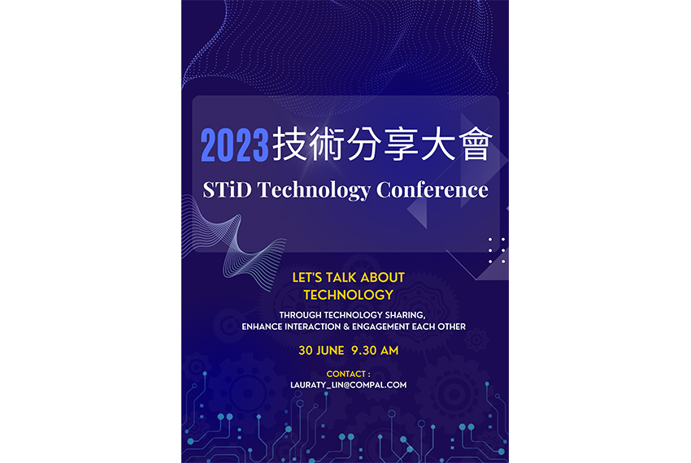
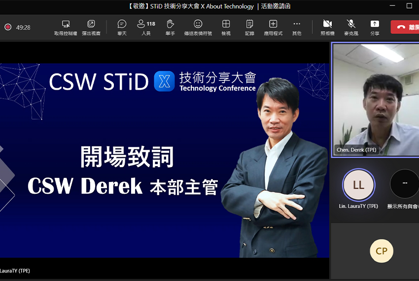
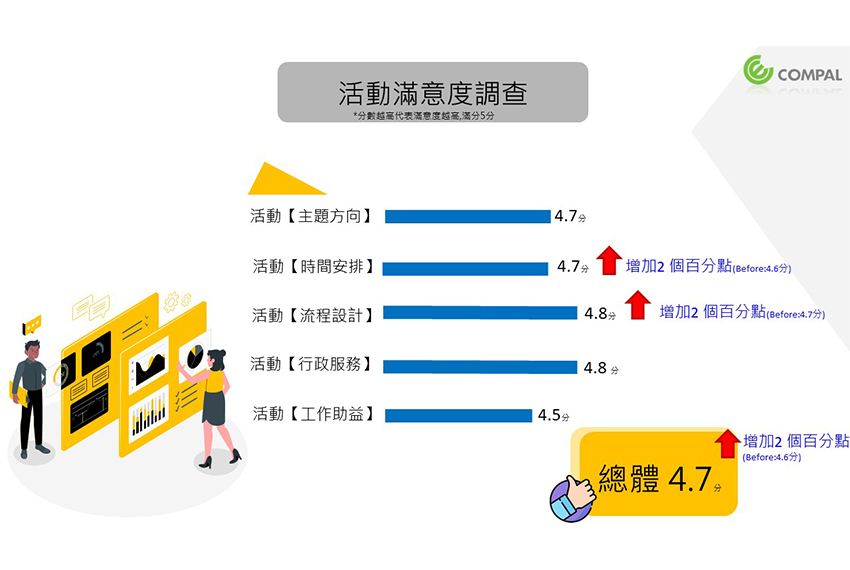
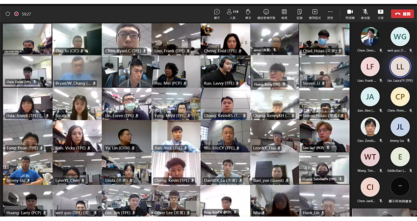

CSW STiD 技術分享大會X About Technology
│Site HR
|  |
今年2023年共同軟體本部_軟體技術創新處CSW STiD 再次舉辦跨部門的技術分享大會，此次大會除了匯聚CSW STiD各部門精銳外，更在數位化推展處葛兆丹處長的支持下，邀請到數位化推展處及工程支援處同仁的參與，攜手促進知識交流並創造新思維的火花，以加深彼此的連結！
本活動於6月30日舉辦，為使參與最大化，並且不受空間上限制，故採Teams舉辦線上會議，使得CN同仁皆能參與整場活動。大會由共同軟體本部主管陳益昌資深處長擔任開場引言嘉賓，為大會揭開序幕，而在開幕儀式中也展現一段關於軟體技術創新處STiD技術發展的創新影片，該影片由主辦單位STiD吳振譯及簡銘杰主辦人帶領的團隊用心剪輯而成，透過影片讓與會者更快認識STiD，藉此增添整場活動的精彩度，參與人數更高達120人。
大會主題共有六個場次：創新實驗室、自動化流程改善、AI大智慧、警示系統、網路相關以及數位化推展處和工程支援處的議題依序登場，豐富整場活動視野。活動中也安排問與答的環節，為與會者提供充分的互動與交流機會，解答心中各種技術疑問。
|  |
在活動謝幕後，透過問卷調查了解同仁們對於活動的滿意度以及活動的收穫，以使活動更臻完美。從滿意度觀之，【主題方向】、【時間安排】、【流程設計】、【行政服務】、【工作助益】平均皆在4.5分以上，且在【時間安排】、【流程設計】以及總體分數此三個面向的滿意度，相較去年更提升2百分點。另從收穫面可知，透過技術分享大會能讓與會者，得知大家有什麼樣的技術，往後可以加以運用在自己工作上，且也能互相學習相似案例的不同處理方式。
|  |
最後，在活動的進行中，也留下同仁美麗身影，共同保存難忘回憶。藉由活動學習額外知識，受益匪淺！
|  |